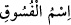

bakımından mahsus bi’z-zemm olup kelâmda mukadder bir muzâf vardır ki o da (__WORD__)’dir. Yani (__WORD__) ‘fâsıklık ismi’ demektir. Mânâ şöyle olur: İmana girdikten ve
onunla tanındıktan sonra müminler için fâsıklıkla anılmak ne kötü bir şöhrettir.
et-Te’vîlâtü’n-Necmiyye’de der ki: Kendilerini imandan çıkaran isim ne kötü bir
isimdir. Âyetten iki şey kasdedilmiş olabilir:
1- Müminlere küfür ve fâsıklık nisbet etmenin çirkin bir şey olduğudur. Bu meyanda
âyet-i kerîmenin Safiyye binti Huyey (r.anhâ) hakkında nazil olduğu rivayet olunur. O
bir defasında ağlayarak Rasûlullah (s.a.)’e gelmiş ve şöyle demişti: “Hanımlar bana
diyorlar ki (Aynu’l-meânî’deki rivâyete göre Âişe bana dedi ki): Ey Yahûdîlerin kızı
Yahûdî!” Efendimiz (s.a.) de ona şöyle buyurdu: Onlara deseydin ya “Benim babam
Harun, amcam Musa, eşim de Muhammed aleyhisselamdır.”
2- Sadece küfür ve fâsıklık değil her türlü lakap takmanın fısk olduğu ve böyle bir şey
ile imanın bir arada bulunmasının çirkin olduğudur. Buna göre Yahûdî Zeyd, Hıristiyan
Amr, Kâfir Bekir, Fâsık Hâlid gibi ifadeler bu kabildendir. Şaşılacak şeydir ki, Araplar
Rumeli müminlerine Hristiyan (Nasârâ) derler. Bu sözleriyle onlar da âyetin kınadığı
insanlar gürûhuna dâhil olurlar. Soyla iftihâr etmek kendilerine fayda sağlamaz. Çünkü
ileride geleceği üzere üstünlük takvâdadır. Şair ne güzel söylemiş:
Nefis Bahile’den ise Hâşim soyundan olmanın ne faydası var?
Yine denilir ki:
Mânâ ehli için sûret noksanlığından ne gam,
Cân Rum’dan olduktan sonra beden varsın Habeş’ten olsun.
“Kim bir mümini tövbe ettiği bir günahtan dolayı ayıplarsa, muhakkak Allah Teâlâ
onu o günaha mübtela kılar ve dünya ve ahirette o mevzuda onu rezil eder.”[193]
Fıkhî bakımdan mesele şöyledir: Eğer bir adam salih bir kimseye; ey fâsık, ey fâcir,
ey habis, ey muhannes, ey mücrim, ey ibâhacı, ey cîfe/leş, ey aptal, ey habis kadının
oğlu, ey fâcir kadının oğlu, ey hırsız, ey kâfir, ey zındık, ey kahpe çocuğu, ey fücûra razı
olanın/kahtaban oğlu, ey lûtî, ey sübyancı, ey fâiz yiyen, ey şarapçı - oysa o bu vasıftan
beridir-, ey deyus, ey bî-namaz, ey münafık, ey hâin, ey zinâkârların sığınağı, ey
hırsızların barınağı, ey haramzâde” derse kendisine ta’zir cezâsı verilir.
Fetâvâ-yı Zeyniyye’de bir kimseye “Ey fâsık” deyip sonra da ta’zir cezâsından
kurtulmak için o kişinin fâsık olduğunu delille isbât etmeye çalışan kişinin getireceği
delilin dinlenip dinlenmeyeceği ile alâkalı bir soru bulunmaktadır. Bu soruya verilen
cevap şudur: Delili dinlenilmez.
Bu, zâhire aykırıdır. Mâkul olan söz konusu kişi sâlih bir kimse değilse ve bahsedilen
özellikler onda varsa ta’zir uygulanmaz.
“Kim de” nehyolunan şeyden “tevbe etmezse işte onlar” itâatin yerine isyanı koyması
ve nefsini azâba mâruz bırakması bakımından “zâlimlerdir.” ‘Zâlim’ fâsıktan; fâsık da
kâfirden daha umûmîdir.